低頭族脖子痠、頸椎變直了怎麼辦？頸椎曲度變直的三階段居家運動
低頭族脖子痠、頸椎變直了怎麼辦？頸椎曲度變直的三階段居家運動
每天低頭滑手機、盯著電腦螢幕好幾個小時，下班後脖子緊得像一塊木板，轉頭還會卡卡的。去照了 X 光，報告上寫著「頸椎曲度變直」（loss of cervical lordosis），甚至有人被說是「頸椎反弓」。
很多人聽到這幾個字就開始緊張：是不是骨頭歪了？要不要矯正？其實，頸椎曲度變直不是一張判決書。與其糾結片子上的角度，不如先把支撐脖子的肌肉練回來——這篇整理了我在門診常給病人的三階段居家運動，從放鬆、深層穩定到肩胛耐力，一步一步來。
動作編號說明：每個動作都有編號（第一階段 NA1–NA4、第二階段 NB1–NB4、第三階段 NC1–NC5）。醫師開立運動處方時會寫上編號，請依處方上的編號找到對應的動作練習。
曲度變直，不等於一定會痛
曾有一項研究分析了 107 位 45 歲以上的民眾，把他們分成「有頸痛」和「沒有頸痛」兩組來比較 X 光。結果兩組的頸椎整體曲度、每一節的角度，甚至「變直」或「反弓」的比例，都沒有顯著差異；沒有頸痛的人中，也有 17% 看得到局部反弓。
這個結果就成了我在臨床上的判斷原則：片子只是線索，不是答案。曲度變直比較像是一個「位置」，真正讓你疼痛的，往往是「長時間卡在同一個位置」所累積的肌肉疲勞與控制力下降。
就像一支釣竿上掛著一顆保齡球——頭大約 4～5 公斤，竿子本身直不直不是重點，重點是釣竿周圍的「線」夠不夠力、夠不夠耐久。所以這套訓練的目標很實際：
- 降低疼痛與僵硬感
- 喚醒深層頸屈肌（deep cervical flexors）與頸伸肌的控制力
- 提升肩胛與姿勢肌耐力，讓脖子不容易「撐不住」
收下巴的迷思
講到頸椎運動，很多人第一個想到的就是「收下巴」（chin tuck）。但這個動作有個小陷阱：單純把下巴往後推，是上頸椎往前點頭、下頸椎往後拉直——做得太用力、太久，反而是在「練習把脖子拉直」。
所以這篇的版本做了兩個調整：
- 收下巴之後，再加上頸椎伸直，讓頸椎後方的伸肌也一起工作
- 深層頸屈肌用「點頭」來練，力道很輕，重點在控制，不在用力推
另一方面，也曾有一項隨機對照研究追蹤 72 位頸椎曲度變直、合併頭部前移的頭暈患者一年多，在一般復健之外加上頸椎伸直牽引的那一組，長期的疼痛與頭暈改善都比較好。這提醒我們：曲度不是全部，但也不是完全不重要。居家運動裡加入安全、溫和的伸直方向訓練，是比較平衡的做法。
第一階段：放鬆與活動度（第 1～2 週）
脖子卡住，很多時候問題不在脖子本身，而是下面的胸椎太僵、前面的胸肌太緊，把頭和肩膀一起往前拉。地基沒鬆，上面的房子怎麼調都歪。
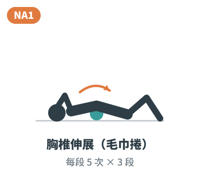
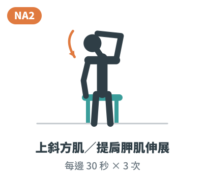
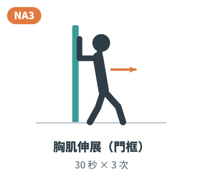
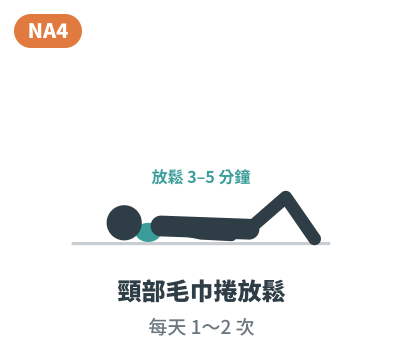
| 動作 | 怎麼做 | 次數 |
|---|---|---|
| NA1 胸椎伸展（毛巾捲） | 仰躺，毛巾捲放在肩胛骨下緣，雙手抱頭、手肘打開，讓上背順著毛巾捲往後伸。由上往下移動 3 段 | 每段 5 次 × 3 段 |
| NA2 上斜方肌／提肩胛肌伸展 | 坐姿，頭往對側歪，同側手輕壓頭部；若把鼻子轉向對側腋下，就是拉提肩胛肌（levator scapulae） | 每邊 30 秒 × 3 次 |
| NA3 胸肌伸展（門框） | 手肘彎 90 度靠在門框上，身體往前跨一步，感覺前胸拉開 | 30 秒 × 3 次 |
| NA4 頸部毛巾捲放鬆 | 仰躺，把捲成約手腕粗的毛巾捲放在脖子後方的彎曲處，放鬆躺著。以舒服為原則，頭暈或手麻就停 | 3～5 分鐘，每天 1～2 次 |
第二階段：深層穩定（第 2～6 週）
這是整套訓練的核心。表層的胸鎖乳突肌、上斜方肌就像大型起重機，力氣大但不精細；深層頸屈肌與頸伸肌則像一節一節扣住脊椎的安全帶。低頭族常見的狀況是——起重機一直在出力，安全帶卻在偷懶。
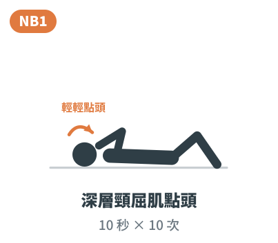
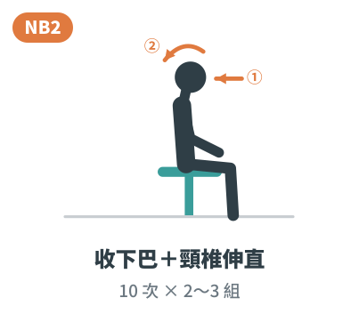
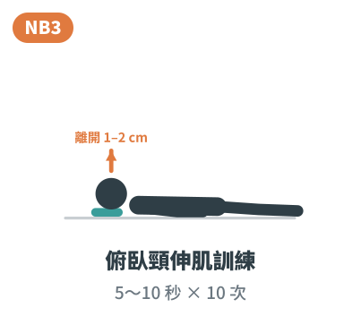
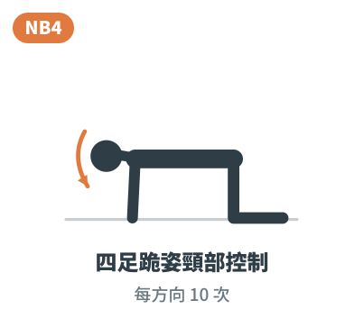
| 動作 | 怎麼做 | 次數 |
|---|---|---|
| NB1 深層頸屈肌點頭 | 仰躺、膝蓋彎曲，頭維持在床上，輕輕做「點頭說嗯」的動作，像要把下巴往喉嚨方向收一點點。手指摸著脖子前側，如果摸到胸鎖乳突肌鼓起來，就是太用力了 | 10 秒 × 10 次 |
| NB2 收下巴＋頸椎伸直 | 坐挺，先把下巴往後收，維持住；再慢慢把頭往後仰到舒服的角度，停 2 秒，回正 | 10 次 × 2～3 組 |
| NB3 俯臥頸伸肌訓練 | 趴在床上，額頭墊毛巾，輕輕收下巴，讓頭離開毛巾 1～2 公分，視線維持看地板，不要抬頭往前看 | 5～10 秒 × 10 次 |
| NB4 四足跪姿頸部控制 | 四足跪姿，背部保持平直，頭部慢慢往下看、回到中立，再左右轉，上背不跟著晃 | 每個方向 10 次 |
第三階段：肩胛與姿勢耐力（第 4 週起）
肩胛骨是脖子的「底座」。底座往前滑、往上聳，脖子就得自己硬撐。這一階段的重點是讓肩胛「穩穩坐回背上」，而且撐得久。
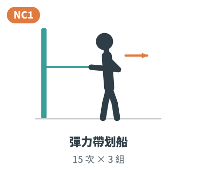
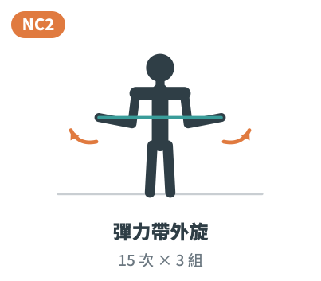
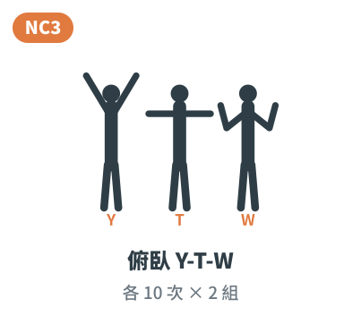
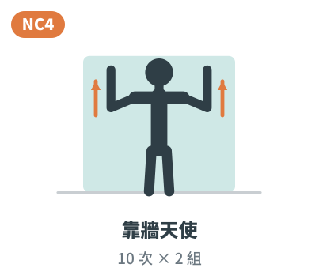
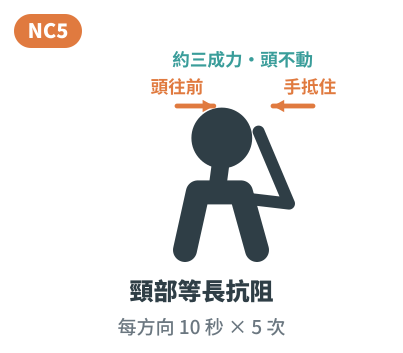
| 動作 | 怎麼做 | 次數 |
|---|---|---|
| NC1 彈力帶划船 | 雙手拉彈力帶往後，想像把肩胛骨往「後、下」放進褲子口袋，不要聳肩 | 15 次 × 3 組 |
| NC2 彈力帶外旋 | 手肘夾住身體、彎 90 度，前臂往外打開拉彈力帶 | 15 次 × 3 組 |
| NC3 俯臥 Y-T-W | 趴著，額頭墊毛巾，手臂分別排成 Y、T、W 字往上抬，拇指朝上 | 每種 10 次 × 2 組 |
| NC4 靠牆天使 | 背、後腦勺貼牆，手臂成「投降」姿勢貼牆往上滑、往下滑，腰不要拱起來 | 10 次 × 2 組 |
| NC5 頸部等長抗阻（isometric） | 手放在額頭、後腦、兩側，頭出約三成力對抗手，但頭不動 | 每個方向 10 秒 × 5 次 |
工作時的小習慣一樣重要：螢幕調到眼睛高度，每 30～45 分鐘做 5 次「收下巴＋伸直」（NB2），讓脖子不要長時間卡在同一個位置。
怎麼做、做多少
- 頻率：每天 1 次，每次 15～20 分鐘；不必每天做完全部，可以從當階段挑 3～4 個動作。
- 疼痛上限：運動中疼痛控制在 0～10 分的 3 分以內，隔天沒有比之前更痛，就可以慢慢加量。
- 進階條件：點頭訓練可以輕鬆維持 10 秒 × 10 次、表層肌肉不代償，再往第三階段加強。
- 時間感：肌肉控制與耐力的改變，通常要連續練習 6～8 週才比較感受得到，不要練兩天就放棄。
運動是「主線」，門診治療則是幫忙「開路」。對於已經緊到練不動的上斜方肌、提肩胛肌、頭夾肌與枕下肌群（suboccipital muscles），我們會先用超音波評估，必要時搭配乾針、浮針等處置放鬆，再接上運動訓練。每個人適合的方式不同，需要由醫師當面評估後決定。
這些狀況，先別自己練
如果有以下狀況，請先停止運動、儘快就醫：
- 手麻、無力，扣扣子、寫字變得不靈活，或走路變得不穩
- 動脖子時出現劇烈頭暈、視線重疊、說話不清楚或吞嚥困難
- 車禍、跌倒等外傷後才開始痛
- 半夜痛醒、不明原因體重減輕、發燒
- 做運動時，麻痛感一路往手臂、手指延伸
結語
頸椎曲度變直，是片子上的一個角度；脖子撐不撐得住，靠的是每天在用的肌肉。先放鬆、再穩定、最後練耐力，循序漸進比一次練很用力更重要。
如果練了一段時間還是卡卡的，或不確定動作做得對不對，建議尋求專業醫師進行超音波與理學評估，找出真正的疼痛來源，再訂定適合自己的訓練。
曲度是結果，肌肉才是鍵。把安全帶繫好，脖子自然撐得住。
本文僅供醫療衛生教育參考，不能取代醫師的診斷與治療。每個人的病情、體質與治療反應不同，文中提及的治療方式並非適用於所有人，亦不保證療效；侵入性治療可能伴隨副作用與風險。如有身體不適，請尋求合格醫療專業人員當面評估。
參考文獻
- Grob D, Frauenfelder H, Mannion AF. The association between cervical spine curvature and neck pain. Eur Spine J. 2007;16(5):669–678. doi:10.1007/s00586-006-0254-1
- Jull G, Trott P, Potter H, et al. A randomized controlled trial of exercise and manipulative therapy for cervicogenic headache. Spine. 2002;27(17):1835–1843. doi:10.1097/00007632-200209010-00004
- Moustafa IM, Diab AA, Harrison DE. The effect of normalizing the sagittal cervical configuration on dizziness, neck pain, and cervicocephalic kinesthetic sensibility: a 1-year randomized controlled study. Eur J Phys Rehabil Med. 2017;53(1):57–71. doi:10.23736/S1973-9087.16.04179-4